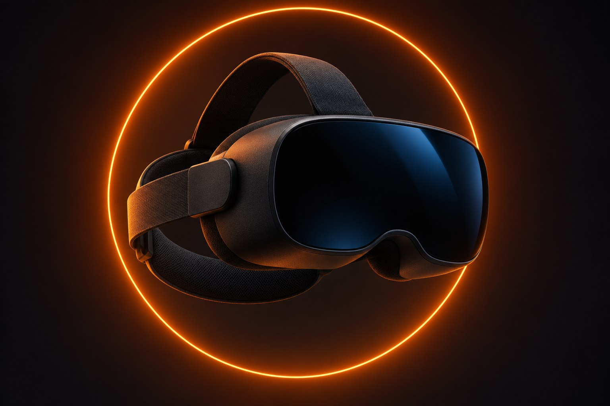

That Day exhibition
360° filming for an exhibition
We filmed the Ukrainian President’s office, the Verkhovna Rada session hall and Taras Shevchenko’s burial site in Kaniv in 360°.
About the That Day exhibition (Ukrainian)We’ve filmed in 360° since 2015. We build VR installations that let viewers choose where to look.
Explore our work
360° filming for an exhibition
We filmed the Ukrainian President’s office, the Verkhovna Rada session hall and Taras Shevchenko’s burial site in Kaniv in 360°.
About the That Day exhibition (Ukrainian)
360° filming
We filmed Drahobrat and Bakota in 360° for Ukraine WOW 2025.
Take the virtual exhibition tour
Interactive VR app, 2021
We built an interactive app for the exhibition that let visitors see the Chornobyl Exclusion Zone from a bird’s-eye view.
Read the archive entry (Ukrainian)
VR installation
Content for nine VR stations equipped with Oculus Go headsets at the Ukraine WOW exhibition.
About the exhibition
Branded 360° film
Sherlock Holmes faces Dracula inside the world of PocketBook, with the viewer at the center of the action.
Watch the film
Immersive film
Four short stories about Budapest, filmed in 360° for Corinthia.
Watch the teaser
360° documentary
A film for Samsung about the New Safe Confinement over Reactor 4 at the Chornobyl Nuclear Power Plant.
Watch the teaserCoverage of our projects and articles by our team on 360° video. All materials belong to their authors and publishers.
ТСН.ua (Ukrainian)
Громадське радіо (Ukrainian)
Wikipedia
Medium · Артем Кисляков (Ukrainian)
Medium · Артем Кисляков (Ukrainian)
ТСН.ua (Ukrainian)
ТСН.ua (Ukrainian)
News about exhibitions from our archive that mention virtual reality.
Той день · Kyiv Post (Ukrainian)
Ukraine WOW · Kyiv Post (Ukrainian)
Чорнобиль. Подорож · Еспресо (Ukrainian)
Вражаріум від Smile · Твоє місто (Ukrainian)
Вражаріум від Smile · УНІАН (Ukrainian)
Вражаріум від Smile · Bazilik Media (Ukrainian)
Чорнобиль. Подорож · Суспільне Культура (Ukrainian)
Чорнобиль. Подорож · Урядовий портал (Ukrainian)
Ukraine WOW · TechUkraine
Парк корупції · УНІАН (Ukrainian)
Музей новин · ТСН.ua (Ukrainian)
360discoVR on Facebook Limelite / 360discoVR More projects and links in the archive
In development
Our player for immersive video.

We choose the cameras, shooting setup and playback format to fit your project.
Spherical video and photography for VR, virtual tours and digital exhibitions.
Spherical stitching, editing and delivery for playback.
Interactive applications for exhibitions, presentations and installations.
Live 360° broadcasts for events, with optional recording and branding.